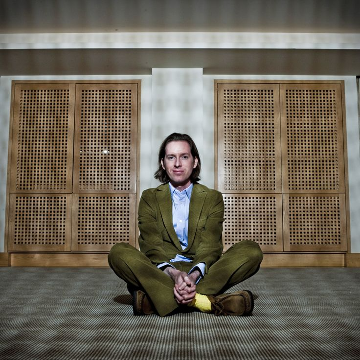
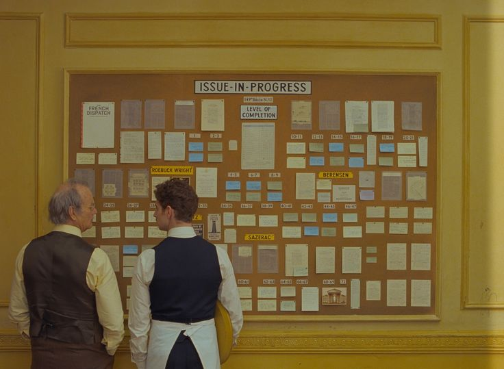
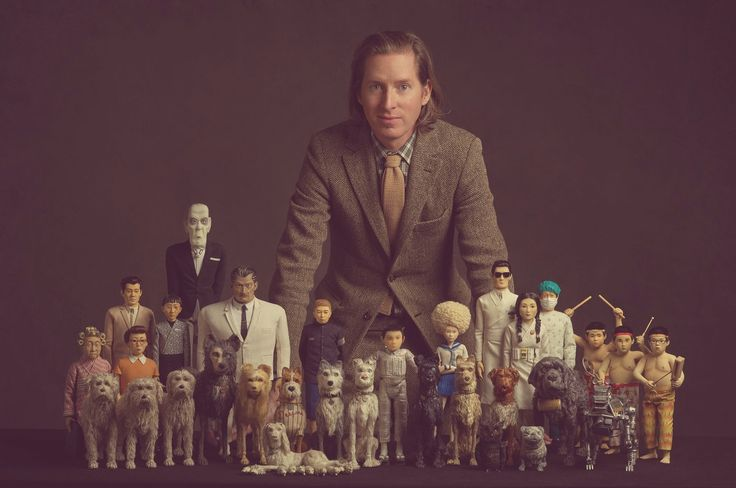
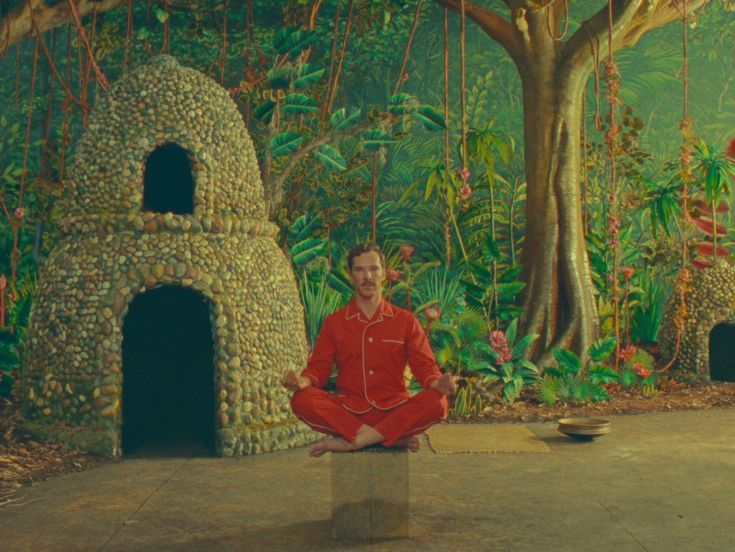
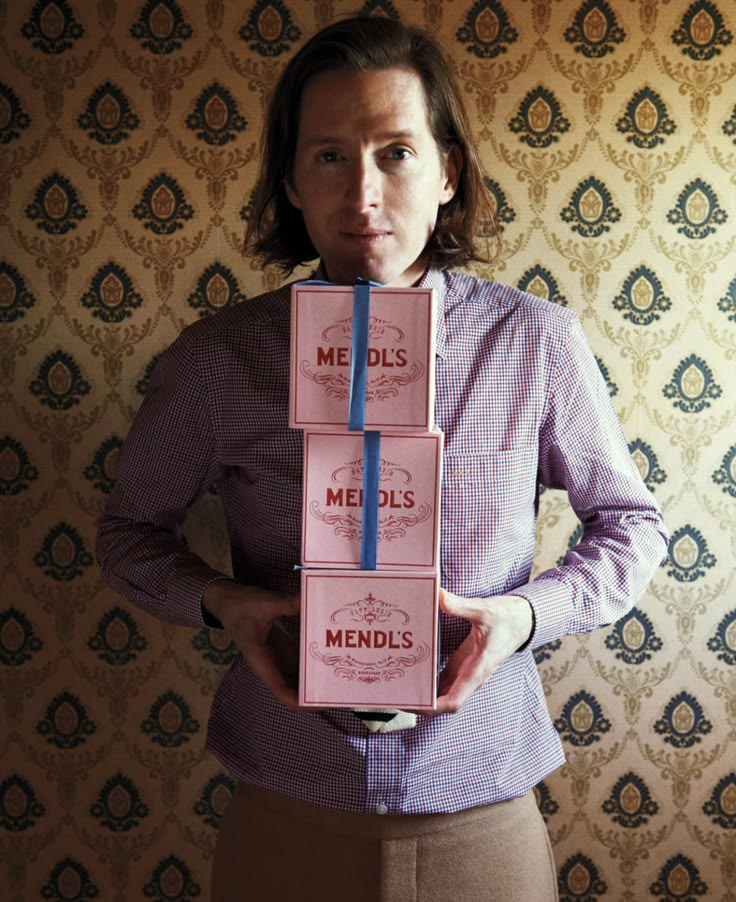
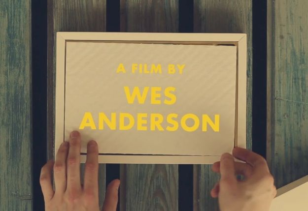
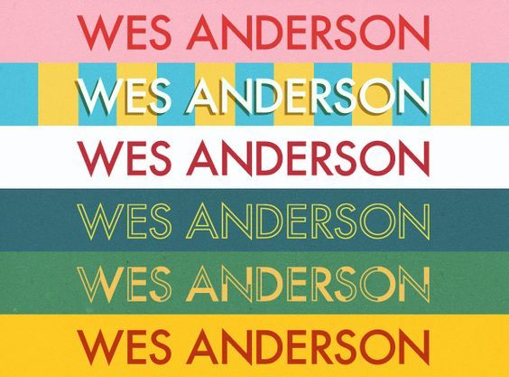
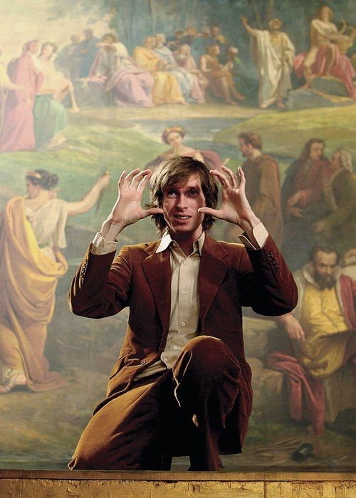
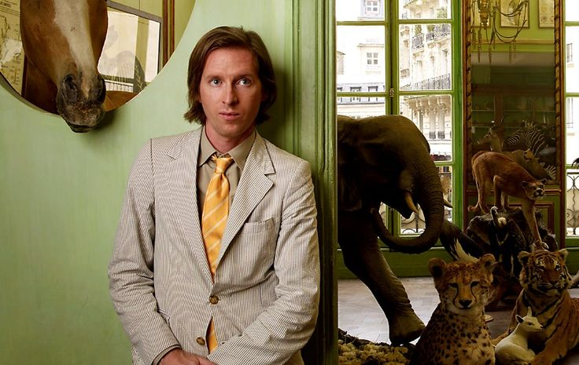

Симетрія та кадрування
Центральна композиція, прямі лінії та ідеальний баланс. Камера майже ніколи не рухається хаотично.
Кожен кадр — це ретельно збудована композиція. Тут ви знайдете історію режисера та розбір його візуальної мови.

Вес Андерсон народився в Техасі, вивчав філософію, а знімає кіно як архитектор. Його шлях — від короткометражок до культових стрічок, де кожен кадр впізнається з першої секунди.

Його стиль — це не випадковість, а сувора система. Вона тримається на трьох китах, які роблять кожен кадр впізнаваним.
Центральна композиція, прямі лінії та ідеальний баланс. Камера майже ніколи не рухається хаотично.
Пастельні тони, контрастні акценти та ретельно підібрані HEX-коди. Колір тут — повноцінний герой.
Вінтажні предмети, рукописні шрифти, мініатюрні models. Кожна дрібниця має значення і свою історію.
Наведіть курсор на кадр, щоб прочитати думки режисера та його героїв.

«Я не дуже шукаю викликів, мені більше до душі пригоди. А поза тим я просто намагаюся знайти історії, які хочу розповісти»

«Немає ніякого сюжету, якщо немає конфлікту.»

«Я хочу намагатися не повторюватися. Але потім я ніби роблю це постійно у своїх фільмах. Це не те, до чого я докладаю якісь спеціальні зусилля.»

«У мене є властивість брати щось абсолютно нереалістичне і намагатися зробити це так, ніби воно існує насправді.»

«Є ще проблиски надії у цьому смітнику, що колись звався цивілізацією.»

«— Навіщо ти завжди дивишся у бінокль?
— Це допомагає бачити речі ближче, навіть якщо вони зовсім поруч.»

«— Він сказав, що поїзд загубився.
— Як поїзд може загубитися? Він же на рейках!»